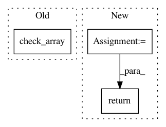

c52ef8720489fac4bb205bf2433aecfb1507288d,modAL/disagreement.py,,vote_entropy,#Any#Any#,9
Before Change
def vote_entropy(committee, data, **predict_proba_kwargs):
check_array(data)
vote = committee.predict(data, **predict_proba_kwargs)
vote_proba = np.zeros(shape=())
After Change
entropy_values[vote_idx] = entropy(vote_proba[vote_idx])
return entropy_values
In pattern: SUPERPATTERN
Frequency: 4
Non-data size: 3
Instances
Project Name: modAL-python/modAL
Commit Name: c52ef8720489fac4bb205bf2433aecfb1507288d
Time: 2017-12-10
Author: 28926195+cosmic-cortex@users.noreply.github.com
File Name: modAL/disagreement.py
Class Name:
Method Name: vote_entropy
Project Name: metric-learn/metric-learn
Commit Name: 23d07466961fa7a72aa8692bc42d6d569b80c5c9
Time: 2019-01-02
Author: 31916524+wdevazelhes@users.noreply.github.com
File Name: metric_learn/sdml.py
Class Name: SDML_Supervised
Method Name: fit
Project Name: EpistasisLab/tpot
Commit Name: 7f77e78520f498a1c86412cc67f40d5abd6ee21d
Time: 2017-09-06
Author: weixuanf@upenn.edu
File Name: tpot/builtins/feature_transformers.py
Class Name: CategoricalSelector
Method Name: transform
Project Name: sebp/scikit-survival
Commit Name: 95eae9185d8df5dc4d3de030dc19c1d475f18e0f
Time: 2016-12-26
Author: sebp@k-d-w.org
File Name: survival/util.py
Class Name:
Method Name: check_y_survival